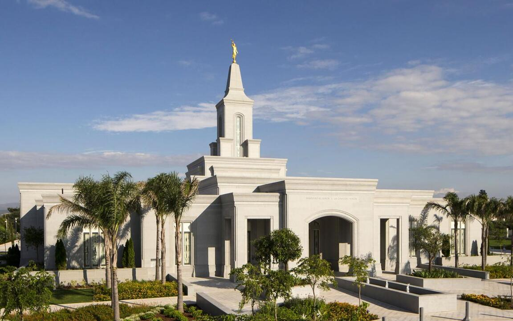
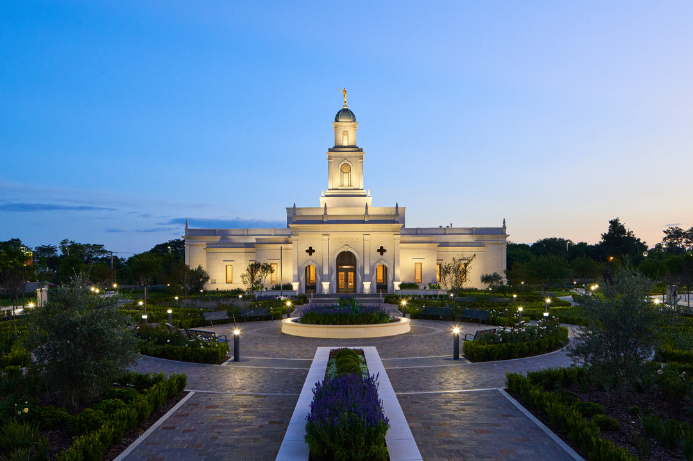
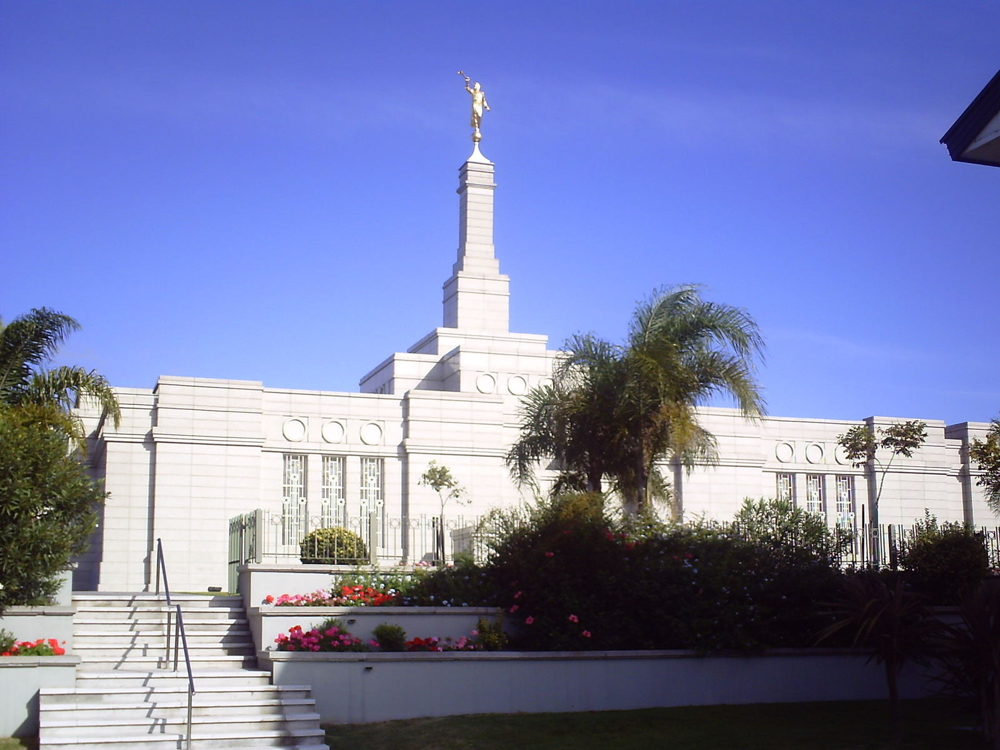
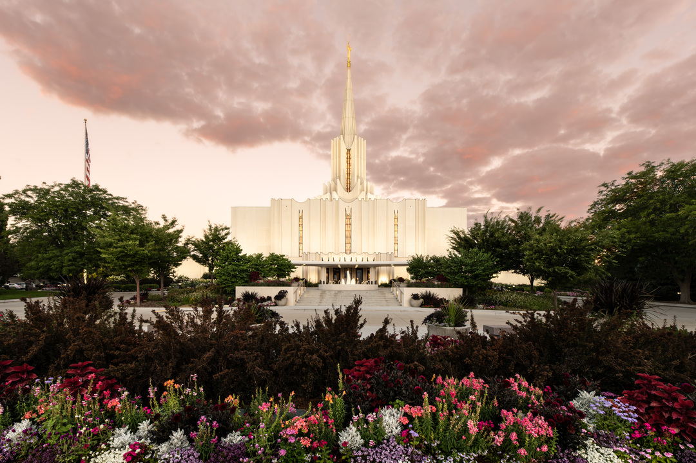
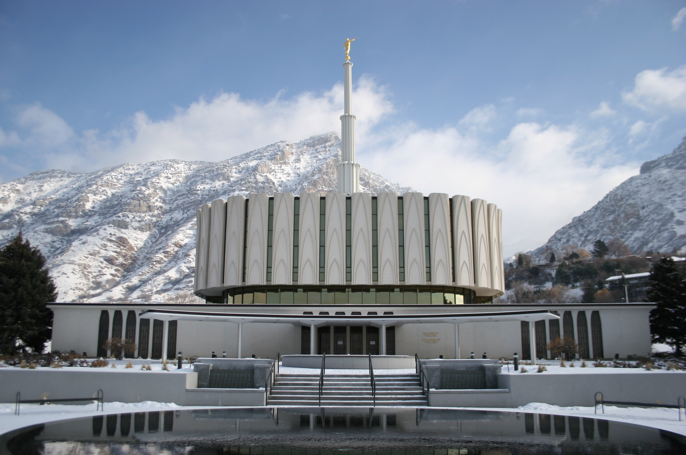

Temple Album
Home
Old
New
Large
Small
About Us
Buenos Aires, Argentina

Cordoba, Argentina

Salta, Argentina

Montevideo, Uruguay
Bountiful, Utah

Jordan River, Utah
Oquirrh Mountain, Utah

Provo, Utah
Salt Lake City, Utah